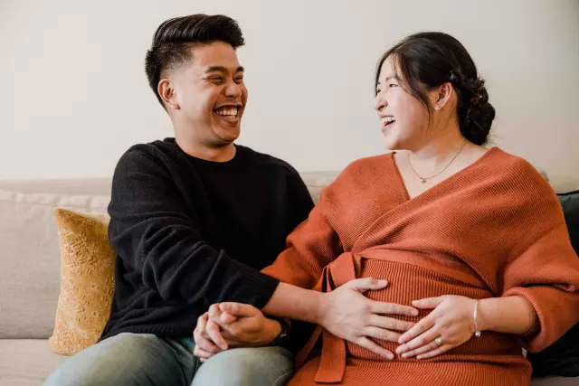
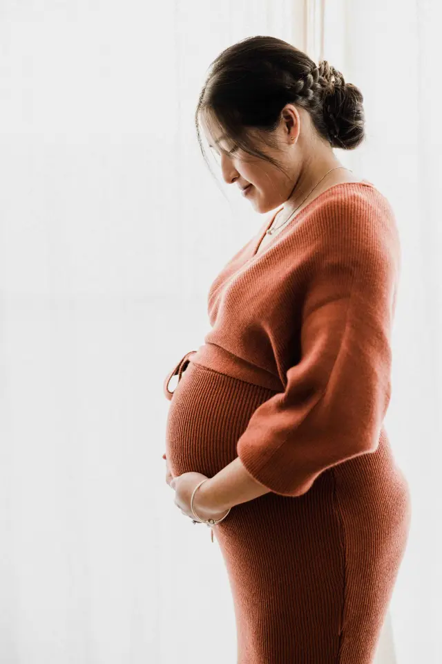
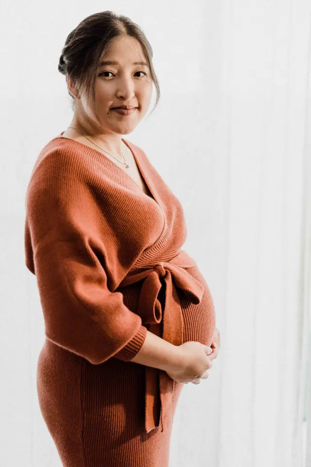
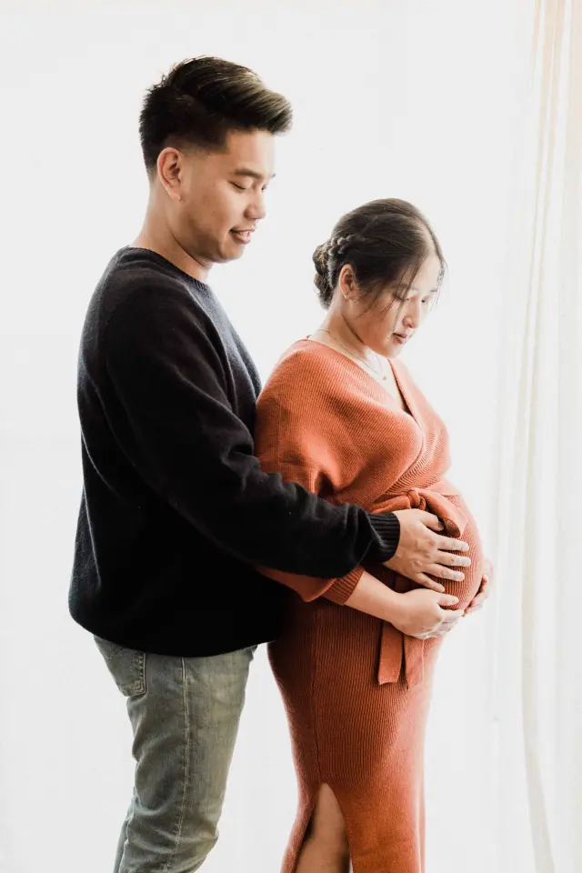
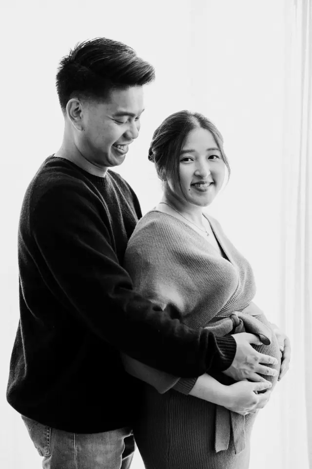
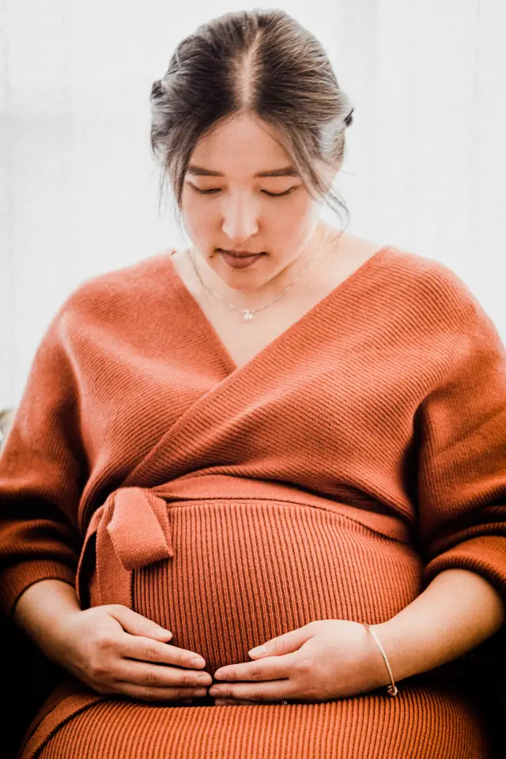
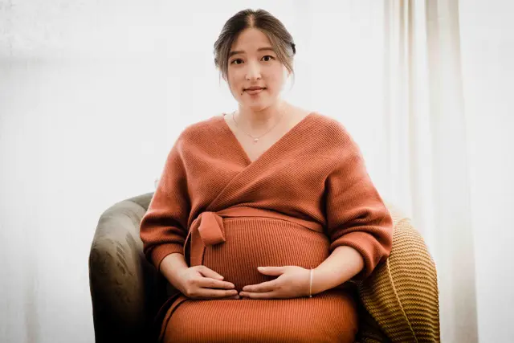
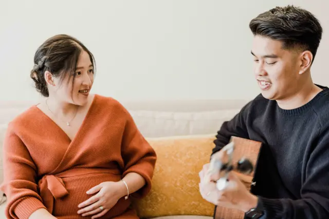
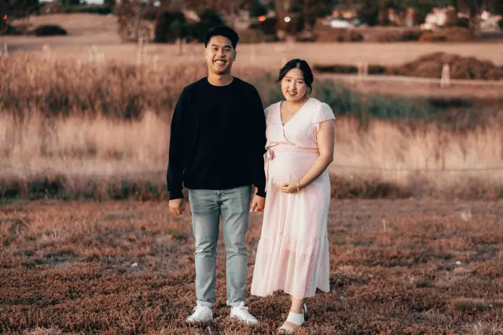

A warm at-home maternity session awaiting a new arrival. Click any photo to view it full size.









Planning something similar? I'd love to hear about it.
See more sessions
 Chasing Light Studio
Chasing Light Studio
Chasing Light Studio
Chasing Light Studio